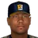
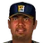
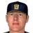
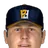

Franchise record book · FBL
Hoboken Zephyrs
Seasons covered: 2002–2002. Only games played for this franchise count.
This club has no pre-2002 history in the export, so its record book is the 2002 season to date. Rate records need 3.1 PA or 1 inning per team game.
Home runs
| # | Player | Season | Team | Home runs |
|---|---|---|---|---|
| #1 | 2002 (FBL) |  Hoboken Zephyrs Hoboken Zephyrs | 10 | |
| #2 | 2002 (FBL) | Hoboken Zephyrs | 10 | |
| #3 | 2002 (FBL) | Hoboken Zephyrs | 8 | |
| #4 | Randall Simon • | 2002 (FBL) | Hoboken Zephyrs | 7 |
| #5 | 2002 (FBL) | Hoboken Zephyrs | 5 | |
| #6 | 2002 (FBL) | Hoboken Zephyrs | 4 | |
| #7 | Juan Castro • | 2002 (FBL) | Hoboken Zephyrs | 4 |
| #8 | 2002 (FBL) | Hoboken Zephyrs | 4 | |
| #9 | 2002 (FBL) | Hoboken Zephyrs | 3 | |
| #10 | 2002 (FBL) | Hoboken Zephyrs | 3 |
Hits
| # | Player | Season | Team | Hits |
|---|---|---|---|---|
| #1 | 2002 (FBL) | Hoboken Zephyrs | 53 | |
| #2 | 2002 (FBL) | Hoboken Zephyrs | 46 | |
| #3 | 2002 (FBL) | Hoboken Zephyrs | 45 | |
| #4 | Randall Simon • | 2002 (FBL) | Hoboken Zephyrs | 42 |
| #5 | 2002 (FBL) | Hoboken Zephyrs | 39 | |
| #6 | 2002 (FBL) | Hoboken Zephyrs | 38 | |
| #7 | 2002 (FBL) | Hoboken Zephyrs | 37 | |
| #8 | 2002 (FBL) | Hoboken Zephyrs | 30 | |
| #9 | Juan Castro • | 2002 (FBL) | Hoboken Zephyrs | 29 |
| #10 | 2002 (FBL) | Hoboken Zephyrs | 15 |
RBI
| # | Player | Season | Team | RBI |
|---|---|---|---|---|
| #1 | 2002 (FBL) | Hoboken Zephyrs | 27 | |
| #2 | 2002 (FBL) | Hoboken Zephyrs | 26 | |
| #3 | Randall Simon • | 2002 (FBL) | Hoboken Zephyrs | 22 |
| #4 | 2002 (FBL) | Hoboken Zephyrs | 19 | |
| #5 | 2002 (FBL) | Hoboken Zephyrs | 18 | |
| #6 | 2002 (FBL) | Hoboken Zephyrs | 15 | |
| #7 | 2002 (FBL) | Hoboken Zephyrs | 14 | |
| #8 | 2002 (FBL) | Hoboken Zephyrs | 13 | |
| #9 | Juan Castro • | 2002 (FBL) | Hoboken Zephyrs | 13 |
| #10 | 2002 (FBL) | Hoboken Zephyrs | 10 |
Runs
| # | Player | Season | Team | Runs |
|---|---|---|---|---|
| #1 | 2002 (FBL) | Hoboken Zephyrs | 26 | |
| #2 | 2002 (FBL) | Hoboken Zephyrs | 26 | |
| #3 | 2002 (FBL) | Hoboken Zephyrs | 22 | |
| #4 | Randall Simon • | 2002 (FBL) | Hoboken Zephyrs | 21 |
| #5 | 2002 (FBL) | Hoboken Zephyrs | 21 | |
| #6 | 2002 (FBL) | Hoboken Zephyrs | 18 | |
| #7 | 2002 (FBL) | Hoboken Zephyrs | 17 | |
| #8 | 2002 (FBL) | Hoboken Zephyrs | 14 | |
| #9 | Juan Castro • | 2002 (FBL) | Hoboken Zephyrs | 13 |
| #10 | 2002 (FBL) | Hoboken Zephyrs | 7 |
Stolen bases
| # | Player | Season | Team | Stolen bases |
|---|---|---|---|---|
| #1 | 2002 (FBL) | Hoboken Zephyrs | 7 | |
| #2 | 2002 (FBL) | Hoboken Zephyrs | 3 | |
| #3 | Randall Simon • | 2002 (FBL) | Hoboken Zephyrs | 3 |
| #4 | 2002 (FBL) | Hoboken Zephyrs | 3 | |
| #5 | 2002 (FBL) | Hoboken Zephyrs | 2 | |
| #6 | 2002 (FBL) | Hoboken Zephyrs | 2 | |
| #7 | 2002 (FBL) | Hoboken Zephyrs | 2 | |
| #8 | 2002 (FBL) | Hoboken Zephyrs | 1 | |
| #9 | 2002 (FBL) | Hoboken Zephyrs | 1 | |
| #10 | Chris Clapinski • | 2002 (FBL) | Hoboken Zephyrs | 0 |
Doubles
| # | Player | Season | Team | Doubles |
|---|---|---|---|---|
| #1 | 2002 (FBL) | Hoboken Zephyrs | 10 | |
| #2 | Juan Castro • | 2002 (FBL) | Hoboken Zephyrs | 10 |
| #3 | 2002 (FBL) | Hoboken Zephyrs | 10 | |
| #4 | 2002 (FBL) | Hoboken Zephyrs | 9 | |
| #5 | 2002 (FBL) | Hoboken Zephyrs | 9 | |
| #6 | 2002 (FBL) | Hoboken Zephyrs | 7 | |
| #7 | 2002 (FBL) | Hoboken Zephyrs | 7 | |
| #8 | 2002 (FBL) | Hoboken Zephyrs | 5 | |
| #9 | Randall Simon • | 2002 (FBL) | Hoboken Zephyrs | 5 |
| #10 | Chris Clapinski • | 2002 (FBL) | Hoboken Zephyrs | 2 |
Triples
| # | Player | Season | Team | Triples |
|---|---|---|---|---|
| #1 | 2002 (FBL) | Hoboken Zephyrs | 3 | |
| #2 | 2002 (FBL) | Hoboken Zephyrs | 1 | |
| #3 | 2002 (FBL) | Hoboken Zephyrs | 1 | |
| #4 | Randall Simon • | 2002 (FBL) | Hoboken Zephyrs | 1 |
| #5 | 2002 (FBL) | Hoboken Zephyrs | 1 | |
| #6 | 2002 (FBL) | Hoboken Zephyrs | 1 | |
| #7 | 2002 (FBL) | Hoboken Zephyrs | 1 | |
| #8 | 2002 (FBL) | Hoboken Zephyrs | 1 | |
| #9 | Chris Clapinski • | 2002 (FBL) | Hoboken Zephyrs | 0 |
| #10 | 2002 (FBL) | Hoboken Zephyrs | 0 |
Walks
| # | Player | Season | Team | Walks |
|---|---|---|---|---|
| #1 | 2002 (FBL) | Hoboken Zephyrs | 17 | |
| #2 | 2002 (FBL) | Hoboken Zephyrs | 16 | |
| #3 | 2002 (FBL) | Hoboken Zephyrs | 15 | |
| #4 | 2002 (FBL) | Hoboken Zephyrs | 13 | |
| #5 | 2002 (FBL) | Hoboken Zephyrs | 12 | |
| #6 | 2002 (FBL) | Hoboken Zephyrs | 10 | |
| #7 | 2002 (FBL) | Hoboken Zephyrs | 9 | |
| #8 | Juan Castro • | 2002 (FBL) | Hoboken Zephyrs | 6 |
| #9 | Randall Simon • | 2002 (FBL) | Hoboken Zephyrs | 6 |
| #10 | Chris Clapinski • | 2002 (FBL) | Hoboken Zephyrs | 4 |
Total bases
| # | Player | Season | Team | Total bases |
|---|---|---|---|---|
| #1 | 2002 (FBL) | Hoboken Zephyrs | 91 | |
| #2 | 2002 (FBL) | Hoboken Zephyrs | 87 | |
| #3 | 2002 (FBL) | Hoboken Zephyrs | 77 | |
| #4 | 2002 (FBL) | Hoboken Zephyrs | 72 | |
| #5 | Randall Simon • | 2002 (FBL) | Hoboken Zephyrs | 70 |
| #6 | 2002 (FBL) | Hoboken Zephyrs | 57 | |
| #7 | 2002 (FBL) | Hoboken Zephyrs | 55 | |
| #8 | 2002 (FBL) | Hoboken Zephyrs | 54 | |
| #9 | Juan Castro • | 2002 (FBL) | Hoboken Zephyrs | 51 |
| #10 | 2002 (FBL) | Hoboken Zephyrs | 26 |
Batting average qualified
| # | Player | Season | Team | Batting average |
|---|---|---|---|---|
| #1 | 2002 (FBL) | Hoboken Zephyrs | .344 | |
| #2 | 2002 (FBL) | Hoboken Zephyrs | .325 | |
| #3 | 2002 (FBL) | Hoboken Zephyrs | .309 | |
| #4 | 2002 (FBL) | Hoboken Zephyrs | .304 | |
| #5 | 2002 (FBL) | Hoboken Zephyrs | .289 | |
| #6 | Randall Simon • | 2002 (FBL) | Hoboken Zephyrs | .286 |
| #7 | 2002 (FBL) | Hoboken Zephyrs | .253 | |
| #8 | 2002 (FBL) | Hoboken Zephyrs | .244 | |
| #9 | Juan Castro • | 2002 (FBL) | Hoboken Zephyrs | .223 |
On-base % qualified
| # | Player | Season | Team | On-base % |
|---|---|---|---|---|
| #1 | 2002 (FBL) | Hoboken Zephyrs | .406 | |
| #2 | 2002 (FBL) | Hoboken Zephyrs | .393 | |
| #3 | 2002 (FBL) | Hoboken Zephyrs | .386 | |
| #4 | 2002 (FBL) | Hoboken Zephyrs | .373 | |
| #5 | 2002 (FBL) | Hoboken Zephyrs | .333 | |
| #6 | 2002 (FBL) | Hoboken Zephyrs | .327 | |
| #7 | Randall Simon • | 2002 (FBL) | Hoboken Zephyrs | .321 |
| #8 | 2002 (FBL) | Hoboken Zephyrs | .306 | |
| #9 | Juan Castro • | 2002 (FBL) | Hoboken Zephyrs | .254 |
Slugging % qualified
| # | Player | Season | Team | Slugging % |
|---|---|---|---|---|
| #1 | 2002 (FBL) | Hoboken Zephyrs | .615 | |
| #2 | 2002 (FBL) | Hoboken Zephyrs | .600 | |
| #3 | 2002 (FBL) | Hoboken Zephyrs | .547 | |
| #4 | 2002 (FBL) | Hoboken Zephyrs | .500 | |
| #5 | Randall Simon • | 2002 (FBL) | Hoboken Zephyrs | .476 |
| #6 | 2002 (FBL) | Hoboken Zephyrs | .447 | |
| #7 | 2002 (FBL) | Hoboken Zephyrs | .439 | |
| #8 | Juan Castro • | 2002 (FBL) | Hoboken Zephyrs | .392 |
| #9 | 2002 (FBL) | Hoboken Zephyrs | .390 |
OPS qualified
| # | Player | Season | Team | OPS |
|---|---|---|---|---|
| #1 | 2002 (FBL) | Hoboken Zephyrs | 1.006 | |
| #2 | 2002 (FBL) | Hoboken Zephyrs | .988 | |
| #3 | 2002 (FBL) | Hoboken Zephyrs | .893 | |
| #4 | 2002 (FBL) | Hoboken Zephyrs | .875 | |
| #5 | 2002 (FBL) | Hoboken Zephyrs | .833 | |
| #6 | Randall Simon • | 2002 (FBL) | Hoboken Zephyrs | .797 |
| #7 | 2002 (FBL) | Hoboken Zephyrs | .745 | |
| #8 | 2002 (FBL) | Hoboken Zephyrs | .724 | |
| #9 | Juan Castro • | 2002 (FBL) | Hoboken Zephyrs | .646 |
WAR (OOTP)
| # | Player | Season | Team | WAR (OOTP) |
|---|---|---|---|---|
| #1 | 2002 (FBL) | Hoboken Zephyrs | 1.6 | |
| #2 | 2002 (FBL) | Hoboken Zephyrs | 0.9 | |
| #3 | 2002 (FBL) | Hoboken Zephyrs | 0.9 | |
| #4 | 2002 (FBL) | Hoboken Zephyrs | 0.9 | |
| #5 | 2002 (FBL) | Hoboken Zephyrs | 0.8 | |
| #6 | 2002 (FBL) | Hoboken Zephyrs | 0.3 | |
| #7 | 2002 (FBL) | Hoboken Zephyrs | 0.3 | |
| #8 | 2002 (FBL) | Hoboken Zephyrs | 0.2 | |
| #9 | 2002 (FBL) | Hoboken Zephyrs | 0.2 | |
| #10 | Chris Clapinski • | 2002 (FBL) | Hoboken Zephyrs | 0.2 |
Wins
| # | Player | Season | Team | Wins |
|---|---|---|---|---|
| #1 | 2002 (FBL) | Hoboken Zephyrs | 5 | |
| #2 |  Livan Hernandez • | 2002 (FBL) | Hoboken Zephyrs | 4 |
| #3 |  Carlos Silva • | 2002 (FBL) | Hoboken Zephyrs | 2 |
| #4 | Brett Jodie • | 2002 (FBL) | Hoboken Zephyrs | 1 |
| #5 | 2002 (FBL) | Hoboken Zephyrs | 1 | |
| #6 |  Travis Smith • | 2002 (FBL) | Hoboken Zephyrs | 1 |
| #7 | Claudio Vargas • | 2002 (FBL) | Hoboken Zephyrs | 1 |
| #8 |  Brian Schmack • | 2002 (FBL) | Hoboken Zephyrs | 1 |
| #9 | J.J. Putz • | 2002 (FBL) | Hoboken Zephyrs | 1 |
| #10 | Jose Nunez • | 2002 (FBL) | Hoboken Zephyrs | 1 |
Strikeouts
| # | Player | Season | Team | Strikeouts |
|---|---|---|---|---|
| #1 | 2002 (FBL) | Hoboken Zephyrs | 44 | |
| #2 | Livan Hernandez • | 2002 (FBL) | Hoboken Zephyrs | 29 |
| #3 | Travis Smith • | 2002 (FBL) | Hoboken Zephyrs | 22 |
| #4 | Claudio Vargas • | 2002 (FBL) | Hoboken Zephyrs | 18 |
| #5 | 2002 (FBL) | Hoboken Zephyrs | 15 | |
| #6 | Carlos Silva • | 2002 (FBL) | Hoboken Zephyrs | 13 |
| #7 | Brian Schmack • | 2002 (FBL) | Hoboken Zephyrs | 12 |
| #8 | Brett Jodie • | 2002 (FBL) | Hoboken Zephyrs | 11 |
| #9 | 2002 (FBL) | Hoboken Zephyrs | 11 | |
| #10 | 2002 (FBL) | Hoboken Zephyrs | 10 |
Saves
| # | Player | Season | Team | Saves |
|---|---|---|---|---|
| #1 | 2002 (FBL) | Hoboken Zephyrs | 10 | |
| #2 | Brian Schmack • | 2002 (FBL) | Hoboken Zephyrs | 3 |
| #3 | Livan Hernandez • | 2002 (FBL) | Hoboken Zephyrs | 0 |
| #4 | Brett Jodie • | 2002 (FBL) | Hoboken Zephyrs | 0 |
| #5 | 2002 (FBL) | Hoboken Zephyrs | 0 | |
| #6 | 2002 (FBL) | Hoboken Zephyrs | 0 | |
| #7 | Carlos Silva • | 2002 (FBL) | Hoboken Zephyrs | 0 |
| #8 | 2002 (FBL) | Hoboken Zephyrs | 0 | |
| #9 | Travis Smith • | 2002 (FBL) | Hoboken Zephyrs | 0 |
| #10 | Claudio Vargas • | 2002 (FBL) | Hoboken Zephyrs | 0 |
Innings
| # | Player | Season | Team | Innings |
|---|---|---|---|---|
| #1 | 2002 (FBL) | Hoboken Zephyrs | 64.0 | |
| #2 | Livan Hernandez • | 2002 (FBL) | Hoboken Zephyrs | 53.0 |
| #3 | Travis Smith • | 2002 (FBL) | Hoboken Zephyrs | 44.0 |
| #4 | Carlos Silva • | 2002 (FBL) | Hoboken Zephyrs | 41.0 |
| #5 | Claudio Vargas • | 2002 (FBL) | Hoboken Zephyrs | 29.1 |
| #6 | Brett Jodie • | 2002 (FBL) | Hoboken Zephyrs | 19.2 |
| #7 | 2002 (FBL) | Hoboken Zephyrs | 16.0 | |
| #8 | 2002 (FBL) | Hoboken Zephyrs | 16.0 | |
| #9 | 2002 (FBL) | Hoboken Zephyrs | 15.2 | |
| #10 | Brian Schmack • | 2002 (FBL) | Hoboken Zephyrs | 15.1 |
Complete games
| # | Player | Season | Team | Complete games |
|---|---|---|---|---|
| #1 | Livan Hernandez • | 2002 (FBL) | Hoboken Zephyrs | 0 |
| #2 | 2002 (FBL) | Hoboken Zephyrs | 0 | |
| #3 | Brett Jodie • | 2002 (FBL) | Hoboken Zephyrs | 0 |
| #4 | 2002 (FBL) | Hoboken Zephyrs | 0 | |
| #5 | 2002 (FBL) | Hoboken Zephyrs | 0 | |
| #6 | Carlos Silva • | 2002 (FBL) | Hoboken Zephyrs | 0 |
| #7 | 2002 (FBL) | Hoboken Zephyrs | 0 | |
| #8 | Travis Smith • | 2002 (FBL) | Hoboken Zephyrs | 0 |
| #9 | Claudio Vargas • | 2002 (FBL) | Hoboken Zephyrs | 0 |
| #10 | Brian Schmack • | 2002 (FBL) | Hoboken Zephyrs | 0 |
Shutouts
| # | Player | Season | Team | Shutouts |
|---|---|---|---|---|
| #1 | Livan Hernandez • | 2002 (FBL) | Hoboken Zephyrs | 0 |
| #2 | 2002 (FBL) | Hoboken Zephyrs | 0 | |
| #3 | Brett Jodie • | 2002 (FBL) | Hoboken Zephyrs | 0 |
| #4 | 2002 (FBL) | Hoboken Zephyrs | 0 | |
| #5 | 2002 (FBL) | Hoboken Zephyrs | 0 | |
| #6 | Carlos Silva • | 2002 (FBL) | Hoboken Zephyrs | 0 |
| #7 | 2002 (FBL) | Hoboken Zephyrs | 0 | |
| #8 | Travis Smith • | 2002 (FBL) | Hoboken Zephyrs | 0 |
| #9 | Claudio Vargas • | 2002 (FBL) | Hoboken Zephyrs | 0 |
| #10 | Brian Schmack • | 2002 (FBL) | Hoboken Zephyrs | 0 |
ERA qualified
| # | Player | Season | Team | ERA |
|---|---|---|---|---|
| #1 | Travis Smith • | 2002 (FBL) | Hoboken Zephyrs | 3.68 |
| #2 | 2002 (FBL) | Hoboken Zephyrs | 3.80 | |
| #3 | Livan Hernandez • | 2002 (FBL) | Hoboken Zephyrs | 4.08 |
| #4 | Carlos Silva • | 2002 (FBL) | Hoboken Zephyrs | 5.49 |
WHIP qualified
| # | Player | Season | Team | WHIP |
|---|---|---|---|---|
| #1 | Travis Smith • | 2002 (FBL) | Hoboken Zephyrs | 1.23 |
| #2 | Livan Hernandez • | 2002 (FBL) | Hoboken Zephyrs | 1.26 |
| #3 | 2002 (FBL) | Hoboken Zephyrs | 1.36 | |
| #4 | Carlos Silva • | 2002 (FBL) | Hoboken Zephyrs | 1.63 |
K/9 qualified
| # | Player | Season | Team | K/9 |
|---|---|---|---|---|
| #1 | 2002 (FBL) | Hoboken Zephyrs | 6.2 | |
| #2 | Livan Hernandez • | 2002 (FBL) | Hoboken Zephyrs | 4.9 |
| #3 | Travis Smith • | 2002 (FBL) | Hoboken Zephyrs | 4.5 |
| #4 | Carlos Silva • | 2002 (FBL) | Hoboken Zephyrs | 2.9 |
WAR (OOTP)
| # | Player | Season | Team | WAR (OOTP) |
|---|---|---|---|---|
| #1 | 2002 (FBL) | Hoboken Zephyrs | 1.3 | |
| #2 | Livan Hernandez • | 2002 (FBL) | Hoboken Zephyrs | 1.1 |
| #3 | 2002 (FBL) | Hoboken Zephyrs | 0.8 | |
| #4 | Travis Smith • | 2002 (FBL) | Hoboken Zephyrs | 0.6 |
| #5 | Claudio Vargas • | 2002 (FBL) | Hoboken Zephyrs | 0.4 |
| #6 | Brian Schmack • | 2002 (FBL) | Hoboken Zephyrs | 0.2 |
| #7 | 2002 (FBL) | Hoboken Zephyrs | 0.2 | |
| #8 | 2002 (FBL) | Hoboken Zephyrs | 0.2 | |
| #9 | Carlos Silva • | 2002 (FBL) | Hoboken Zephyrs | 0.1 |
| #10 | J.J. Putz • | 2002 (FBL) | Hoboken Zephyrs | -0.1 |
Home runs
| # | Player | Years | Home runs |
|---|---|---|---|
| #1 | 1991–02 | 10 | |
| #2 | 1999–02 | 10 | |
| #3 | 1998–02 | 8 | |
| #4 | Randall Simon • | 1997–02 | 7 |
| #5 | 2001–02 | 5 | |
| #6 | 2001–02 | 4 | |
| #7 | Juan Castro • | 1995–02 | 4 |
| #8 | 2000–02 | 4 | |
| #9 | 1994–02 | 3 | |
| #10 | 2002–02 | 3 |
Hits
| # | Player | Years | Hits |
|---|---|---|---|
| #1 | 2000–02 | 53 | |
| #2 | 1999–02 | 46 | |
| #3 | 1991–02 | 45 | |
| #4 | Randall Simon • | 1997–02 | 42 |
| #5 | 1998–02 | 39 | |
| #6 | 2001–02 | 38 | |
| #7 | 1994–02 | 37 | |
| #8 | 2001–02 | 30 | |
| #9 | Juan Castro • | 1995–02 | 29 |
| #10 | 2002–02 | 15 |
RBI
| # | Player | Years | RBI |
|---|---|---|---|
| #1 | 1999–02 | 27 | |
| #2 | 1991–02 | 26 | |
| #3 | Randall Simon • | 1997–02 | 22 |
| #4 | 1998–02 | 19 | |
| #5 | 2000–02 | 18 | |
| #6 | 1994–02 | 15 | |
| #7 | 2001–02 | 14 | |
| #8 | 2001–02 | 13 | |
| #9 | Juan Castro • | 1995–02 | 13 |
| #10 | 2002–02 | 10 |
Runs
| # | Player | Years | Runs |
|---|---|---|---|
| #1 | 1999–02 | 26 | |
| #2 | 2000–02 | 26 | |
| #3 | 1991–02 | 22 | |
| #4 | Randall Simon • | 1997–02 | 21 |
| #5 | 1998–02 | 21 | |
| #6 | 2001–02 | 18 | |
| #7 | 1994–02 | 17 | |
| #8 | 2001–02 | 14 | |
| #9 | Juan Castro • | 1995–02 | 13 |
| #10 | 2002–02 | 7 |
Stolen bases
| # | Player | Years | Stolen bases |
|---|---|---|---|
| #1 | 1999–02 | 7 | |
| #2 | 2001–02 | 3 | |
| #3 | Randall Simon • | 1997–02 | 3 |
| #4 | 2002–02 | 3 | |
| #5 | 1991–02 | 2 | |
| #6 | 2000–02 | 2 | |
| #7 | 1998–02 | 2 | |
| #8 | 1994–02 | 1 | |
| #9 | 2002–02 | 1 | |
| #10 | Chris Clapinski • | 1999–02 | 0 |
Doubles
| # | Player | Years | Doubles |
|---|---|---|---|
| #1 | 1991–02 | 10 | |
| #2 | Juan Castro • | 1995–02 | 10 |
| #3 | 2000–02 | 10 | |
| #4 | 1999–02 | 9 | |
| #5 | 1994–02 | 9 | |
| #6 | 2001–02 | 7 | |
| #7 | 1998–02 | 7 | |
| #8 | 2001–02 | 5 | |
| #9 | Randall Simon • | 1997–02 | 5 |
| #10 | Chris Clapinski • | 1999–02 | 2 |
Triples
| # | Player | Years | Triples |
|---|---|---|---|
| #1 | 1991–02 | 3 | |
| #2 | 2001–02 | 1 | |
| #3 | 1999–02 | 1 | |
| #4 | Randall Simon • | 1997–02 | 1 |
| #5 | 2000–02 | 1 | |
| #6 | 1994–02 | 1 | |
| #7 | 1998–02 | 1 | |
| #8 | 2002–02 | 1 | |
| #9 | Chris Clapinski • | 1999–02 | 0 |
| #10 | 2001–02 | 0 |
Walks
| # | Player | Years | Walks |
|---|---|---|---|
| #1 | 1994–02 | 17 | |
| #2 | 1991–02 | 16 | |
| #3 | 2001–02 | 15 | |
| #4 | 2000–02 | 13 | |
| #5 | 1998–02 | 12 | |
| #6 | 2001–02 | 10 | |
| #7 | 1999–02 | 9 | |
| #8 | Juan Castro • | 1995–02 | 6 |
| #9 | Randall Simon • | 1997–02 | 6 |
| #10 | Chris Clapinski • | 1999–02 | 4 |
Total bases
| # | Player | Years | Total bases |
|---|---|---|---|
| #1 | 1991–02 | 91 | |
| #2 | 1999–02 | 87 | |
| #3 | 2000–02 | 77 | |
| #4 | 1998–02 | 72 | |
| #5 | Randall Simon • | 1997–02 | 70 |
| #6 | 1994–02 | 57 | |
| #7 | 2001–02 | 55 | |
| #8 | 2001–02 | 54 | |
| #9 | Juan Castro • | 1995–02 | 51 |
| #10 | 2002–02 | 26 |
Batting average min 2,000 PA
| # | Player | Years | Batting average |
|---|
On-base % min 2,000 PA
| # | Player | Years | On-base % |
|---|
Slugging % min 2,000 PA
| # | Player | Years | Slugging % |
|---|
OPS min 2,000 PA
| # | Player | Years | OPS |
|---|
WAR (OOTP)
| # | Player | Years | WAR (OOTP) |
|---|---|---|---|
| #1 | 1998–02 | 1.6 | |
| #2 | 1999–02 | 0.9 | |
| #3 | 1991–02 | 0.9 | |
| #4 | 2001–02 | 0.9 | |
| #5 | 2000–02 | 0.8 | |
| #6 | 2002–02 | 0.3 | |
| #7 | 2001–02 | 0.3 | |
| #8 | 2002–02 | 0.2 | |
| #9 | 1997–02 | 0.2 | |
| #10 | Chris Clapinski • | 1999–02 | 0.2 |
Wins
| # | Player | Years | Wins |
|---|---|---|---|
| #1 | 1998–02 | 5 | |
| #2 | Livan Hernandez • | 1996–02 | 4 |
| #3 | Carlos Silva • | 2002–02 | 2 |
| #4 | Brett Jodie • | 2001–02 | 1 |
| #5 | 1996–02 | 1 | |
| #6 | Travis Smith • | 1998–02 | 1 |
| #7 | Claudio Vargas • | 2002–02 | 1 |
| #8 | Brian Schmack • | 2002–02 | 1 |
| #9 | J.J. Putz • | 2002–02 | 1 |
| #10 | Jose Nunez • | 2002–02 | 1 |
Strikeouts
| # | Player | Years | Strikeouts |
|---|---|---|---|
| #1 | 1998–02 | 44 | |
| #2 | Livan Hernandez • | 1996–02 | 29 |
| #3 | Travis Smith • | 1998–02 | 22 |
| #4 | Claudio Vargas • | 2002–02 | 18 |
| #5 | 2002–02 | 15 | |
| #6 | Carlos Silva • | 2002–02 | 13 |
| #7 | Brian Schmack • | 2002–02 | 12 |
| #8 | Brett Jodie • | 2001–02 | 11 |
| #9 | 1999–02 | 11 | |
| #10 | 2002–02 | 10 |
Saves
| # | Player | Years | Saves |
|---|---|---|---|
| #1 | 2002–02 | 10 | |
| #2 | Brian Schmack • | 2002–02 | 3 |
| #3 | Livan Hernandez • | 1996–02 | 0 |
| #4 | Brett Jodie • | 2001–02 | 0 |
| #5 | 1999–02 | 0 | |
| #6 | 1996–02 | 0 | |
| #7 | Carlos Silva • | 2002–02 | 0 |
| #8 | 1998–02 | 0 | |
| #9 | Travis Smith • | 1998–02 | 0 |
| #10 | Claudio Vargas • | 2002–02 | 0 |
Innings
| # | Player | Years | Innings |
|---|---|---|---|
| #1 | 1998–02 | 64.0 | |
| #2 | Livan Hernandez • | 1996–02 | 53.0 |
| #3 | Travis Smith • | 1998–02 | 44.0 |
| #4 | Carlos Silva • | 2002–02 | 41.0 |
| #5 | Claudio Vargas • | 2002–02 | 29.1 |
| #6 | Brett Jodie • | 2001–02 | 19.2 |
| #7 | 2002–02 | 16.0 | |
| #8 | 1999–02 | 16.0 | |
| #9 | 1996–02 | 15.2 | |
| #10 | Brian Schmack • | 2002–02 | 15.1 |
Complete games
| # | Player | Years | Complete games |
|---|---|---|---|
| #1 | Livan Hernandez • | 1996–02 | 0 |
| #2 | 2002–02 | 0 | |
| #3 | Brett Jodie • | 2001–02 | 0 |
| #4 | 1999–02 | 0 | |
| #5 | 1996–02 | 0 | |
| #6 | Carlos Silva • | 2002–02 | 0 |
| #7 | 1998–02 | 0 | |
| #8 | Travis Smith • | 1998–02 | 0 |
| #9 | Claudio Vargas • | 2002–02 | 0 |
| #10 | Brian Schmack • | 2002–02 | 0 |
Shutouts
| # | Player | Years | Shutouts |
|---|---|---|---|
| #1 | Livan Hernandez • | 1996–02 | 0 |
| #2 | 2002–02 | 0 | |
| #3 | Brett Jodie • | 2001–02 | 0 |
| #4 | 1999–02 | 0 | |
| #5 | 1996–02 | 0 | |
| #6 | Carlos Silva • | 2002–02 | 0 |
| #7 | 1998–02 | 0 | |
| #8 | Travis Smith • | 1998–02 | 0 |
| #9 | Claudio Vargas • | 2002–02 | 0 |
| #10 | Brian Schmack • | 2002–02 | 0 |
ERA min 500 IP
| # | Player | Years | ERA |
|---|
WHIP min 500 IP
| # | Player | Years | WHIP |
|---|
K/9 min 500 IP
| # | Player | Years | K/9 |
|---|
WAR (OOTP)
| # | Player | Years | WAR (OOTP) |
|---|---|---|---|
| #1 | 1998–02 | 1.3 | |
| #2 | Livan Hernandez • | 1996–02 | 1.1 |
| #3 | 2002–02 | 0.8 | |
| #4 | Travis Smith • | 1998–02 | 0.6 |
| #5 | Claudio Vargas • | 2002–02 | 0.4 |
| #6 | Brian Schmack • | 2002–02 | 0.2 |
| #7 | 2002–02 | 0.2 | |
| #8 | 1996–02 | 0.2 | |
| #9 | Carlos Silva • | 2002–02 | 0.1 |
| #10 | J.J. Putz • | 2002–02 | -0.1 |